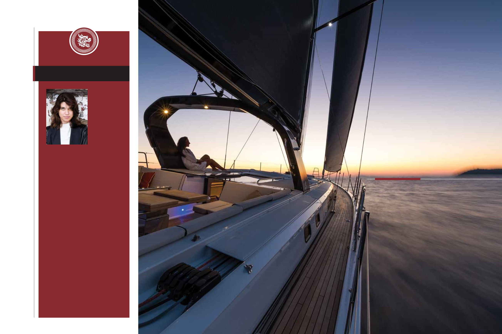

88-89 / 116
88-89 / 116


89
88
SOUTH CHINA ELITE
When our Deputy Editor Raquel Dias is not writing
or chasing stories for O MEDIA, she is usually
reading, listening to rock & roll or coloring books.
Raquel is a Mozambican-born Portuguese who
has lived in Macau for most of her life. After
studying History and Social Anthropology in the
UK, she came back home with a newfound love
for Macau. Having worked in media since she
graduated, Raquel likes to think of herself as a
storyteller rather than journalist.
為澳傳媒撰寫文章及安排採訪外，副總編輯戴樂
瑩酷愛閱讀、搖滾樂及為書本填色。戴樂瑩是在
莫桑比克出生的葡萄牙人，大部分時間在澳門居
住。於英國取得歷史及社會人類學學位後，她重
返澳門開展其事業。自大學畢業後一直在傳媒界
工作的戴樂瑩，視自己為說故事者多於記者。
Raquel Dias
戴樂瑩
Call of the sea
大海的呼喚
By Raquel Dias
文︰戴樂瑩
Hong Kong’s Simpson Marine has been
providing luxury yachts to Asian seafarers
for more than 30 years.
在三十餘年，香港辛普森遊艇（Simpson
Marine）一直為亞洲出海愛好者供應豪
華遊艇。
About the author
作者簡介